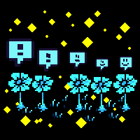
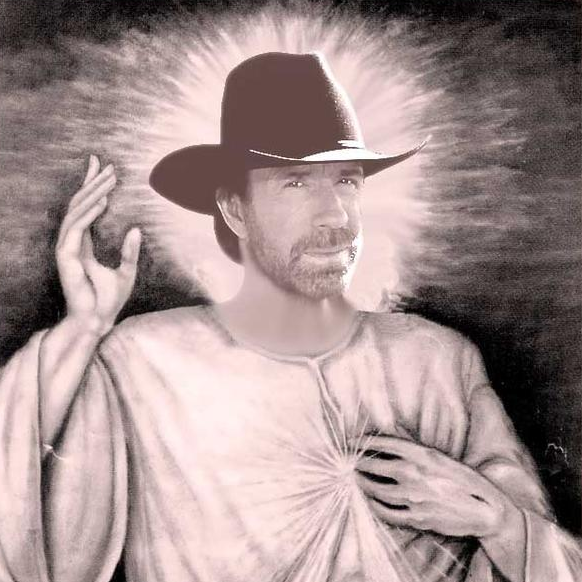
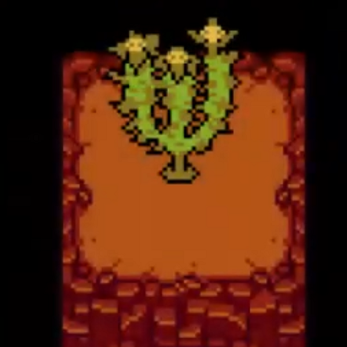
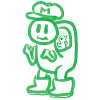

She grumbled weakly, as her arm tried to blindly look for her blanket and pull it back to her side. What a nightmare she just had… Not only had it been ridiculous, it was purely terrifying as well. And annoying.She really couldn’t find her blanket. Or her pillow, for that matter.
Whatever her head was lying on, that wasn’t her pillow.
She was getting cold. So annoying.…Wait a minute.
She opened her eyes in a start and stared down.
This wasn’t her bed either.
She saw a cold light in the distance. She looked up in fear.
Definitely-Not-Sans was sitting at the desk and had taped the flashlight back on top of the still inactive desk lamp, so he could work on a huge messy pile of papers. Probably blueprints.
She saw him wave a pen around and scratch the back of his skull with a rattling sound that made her shiver, and she even thought she heard some grunting and mumbling at some point.
…Until his movements went to a halt and he became stiff as a statue. Very slowly, she saw him turn his chair so he could face her.
“oh. hey. you sure like to take your time, huh?”
His head was now resting nonchalantly on his left hand, whose elbow was leisurely lying on the desk. She felt like he had tried and failed to sound friendly, but only his boredom and a reasonably controlled irritation poorly wrapped into genuine sarcasm had been audible, in spite of his possible efforts.
The human rose a livid head, her expression stuck with shock and an ever growing fear as her jaw gaped open.
Nope. Nope. Nope. Nope, nope, not happening, this is not happening…
Sans rolled his eyes cynically.
“nope, i’m still here. not a dream.” he sighed, rubbing his forehead as if he were trying to avoid face-palming too openly. “now that this is finally settled, maybe we can—”
“Y-You can’t be Sans… Ha-ha-ha, right…? I-It just doesn’t make sense, t-that’s physically i-impossible…”
It sounded as if he was grinding his teeth, as he slowly but angrily stood up and started pacing threateningly towards her.
“oh no you won’t. i don’t know how long you wanted to play this game, but I’ve had enough of it.”
Her instincts screamed at her to jump out of the sofa and get the hell away from here, but her legs did not respond. Then again, the door had probably been locked again by now, so it wasn’t like she could have gone far.
The skeleton’s left hand closed into a fist as if he had just taken a grip onto something. She yelped as she immediately felt some kind of pull coming from her very deep chest; and as soon as he put his hand into motion, all she really managed to do afterwards was gasp in shock— and for breathable air, too.
The next instant, all she had time to realize was that she couldn’t feel the ground under her feet anymore— and that she was now stuck floating in midair, her face standing hardly one foot away from his.
Wow, now that escalated quickly! You done goofed, girl.
His eye flashed with rings of bright cyan ember trembling in the middle of an obscure endless void, and his voice had seemed to sound even deeper than before. The right eye-socket was just pure darkness as its shape seemed to still enlarge itself into one round black hole.
Part of her wanted to scream, but her gawking mouth felt speechless and dry.
“Listen, kid. I’ve been patient until now, but I have WAY more important things to do than play the babysitter. Especially yours.”“P-P-Put me down!”
He didn’t even flinch in response to that hysterical shriek, instead slightly narrowing his shadowed bony pseudo-eyebrows. Unlike before when all that could be seen of his face was some vague pale silhouette under the electric shades of a faraway torchlight, this time his entire features were somehow lit from below by a ghastly deep watery halo quivering between them.
Although his tone sounded calmer, for once his ever stuck smile seemed eerily in place, as his left iris stabilized to an abysmal azure shade throwing daggers all around.
“at first i thought you were just being stupid. maybe you are. i mean, you did make a VERY dumb mistake.” The grip in his left glowing fist tightened and the pain in her chest doubled, making her yelp in surprise following the feeling of this ever narrowing constriction. “You REALLY must’ve got some guts to take me for an idiot, especially when you already know as much as you do.”
“I don’t even know what the hell you’re talking about!”
He frowned more. His grip tightened more. Whatever it was that she could now feel pounding in her chest, it was huge, it was flashing dark blue, and it was hurting. It felt as if someone had somehow managed to hang her by her heart and it was doing its best to keep pounding at a wild rate as if it were about to free itself from her ribcage.
It hurt. He was furious and he was scary and it hurt.
“you already know this, but a long time ago… i promised that if any human came through the door leading to the ruins, then i’d have to protect them.” No matter how impossible it was supposed to be, she felt as if his smile had somehow grown even larger. His eye suddenly stopped glowing, though he still maintained a strong magical hold on her. “But you didn’t come through that door, did you?”
“Please I’ll do anything just put me down!”
This time, however, he did stop; if only for a split second.
His hand faintly lowered, even if his grip was still keeping his prey at a reasonable distance from the ground.
The human was forcefully trying to curl up in on herself in some kind of ridiculous malformed ball of flesh, still floating in midair, with a dark blue halo flashing and trembling in the middle of her chest. Her shaking hands wrapped around her head and covered her ears, while her eyes were forcedly closed and tearing apart in weak cries slightly twinkling in the dim light.
For some strange reason, in this instant, Sans started to feel that something really was wrong. He could acknowledge that, yes, obviously, she was not anywhere near having a good time; but it went so much further than just that. It was as if internally, somehow, from the bottom of his soul, he knew that any other normal human who would have been put in her place was not meant to react this strongly.
He had obviously meant to give her a scare; but given the type of human this was; given the fact that even the dumbest of these players had the capability to predict any of the game’s characters’ behaviors at least to some extent, and given the incredibly exhaustive knowledge she herself had proven to hold… Shouldn’t she have expected him to react similarly to this? Shouldn’t she have seen this coming?
She had proven to be quite the sassy and resourceful kid, and a pretty observant one at that, easily to the point of actually becoming dangerous if she started jumping to conclusions and going back to that ‘paranoia mode’ of hers. Sure, he had seen her shaking and stuttering even during his first conversation with her, but even when her fear was obvious, he had simply assumed that she was the type of person who would sneakily bite back in the case of danger, just like what she had done the last time.
This radical change of behavior was deeply disconcerting, to say the least. He first tried to dismiss this impression as he reasoned that she was probably faking such over-the-top response, so he would let his guard down and hesitate at the worst moment, if only for an instant— but the feeling would only get stronger the longer he was staring at this pitiful view, and the fact that her soul was plain visible and fully within his grasp only made her true feelings all the more obvious.
This was not the expression of a calculating liar crying crocodile tears.
“Put me down,” she repeated again and again in a shaking and desperately imploring voice, “put me down, put-me-down please put-me-down ooh put-me-down-I’m-so-sorry-but-oh-my-God-put-me-down…”
His eye-sockets closed as he sighed tensely. As much as he remained deeply annoyed by the time they were wasting, his anger was simply and effectively defeated by his surprise and confusion, and his hand carefully sent the crybaby back in place on the couch, before he released his grasp. Act or not, it was now definite that pushing her that way would lead nowhere. So much for trying to have her spill the beans.
For the next few seconds, he stood in front of her, waiting for the right moment to finally start explaining his plans or just begin an actual conversation… But the kid would not stop crying and shaking, even though he could tell that she was trying her best to calm down on her own.
…Well. That was awkward.
“uhh… ok, maybe i pushed it a bit too far, and i’m still a little mad at you for lying to me about this game thing… but that stuff doesn’t even matter in the end, so… i mean, uh, what with you knowing even more about the game than I do… i thought it was obvious that i was mostly messin’ with ya. mostly.”Yeah, it really wasn’t.
He watched as the fleshy ball kept trembling and sobbing for about one or two more minutes, and he eventually brought his rolling chair along as soon as his laziness told him that he was getting bored. He could hear the brat mutter distorted words sounding like some awkward apologies, but it took a while before she finally pulled her crimson head away from her arms and struggled to actually meet him in the eyes.
Or rather, she just tried to stare back at the pair of white glowing pellets glaring at her, given the fact that the only source of light available was once more only that of the little faraway torchlight, sitting on top of the desk located at least a dozen feet away from them. From that distance she could still somewhat imagine the skeleton’s outlines under the dim cold light, but it only sharpened his features through dancing ghastly reflections on his skull.
Once more, Sans was slightly taken aback for a half second upon seeing the expression on her face. If this wasn’t just some incredibly convincing act, then the genuine message it read was crystal clear:For some reason, it almost appeared as if the mere fact of looking at him was actually painful.
He had seen fear. He knew what fear looked like.This definitely was something else.
“…Sans.” This was all she eventually managed to whisper in a broken voice that still somewhat struggled to hide her terror, to no avail.
“you’re still on to that?” he asked, lifting his nonexistent eyebrows in cynical mock-surprise. “i figured you’d have realized when you were hangin’ around in the air. or, uh. back to when we met around, what, an hour ago by now?”
She clumsily pushed her way back into the depths of the sofa (and almost lost her balance in the process), as she apparently tried to increase the distance between them as much as it was physically possible.Then she looked down and trembled again.
“I-I really didn’t. S-sorry. I m-must’ve looked stupid…”
“pretty much.” he nodded in a mockingly solemn way.
The awkward silence resumed. He heard her sniffle and try to recompose herself, but it was obvious that she still looked deeply shaken. Sans thought about all the things he wanted to explain, but after a few more seconds…He decided that maybe that could wait a little, as he gave in and sighed. Maybe they both needed a break, after all. There was so much a serious existential-crisis-inducing conversation could do, especially under such circumstances.
“…look. i get it, you know? i took you from wherever you used to be and got you here while you never asked for anythin’, you had no idea that this game you used to play was actually alive or whatever…” He shrugged and took an audible, genuinely calm breath. “must be pretty freaky to have the truth hammered onto you like that. t’was hard for me, too.”
She slowly raised a pair of red swollen eyes towards him, silently watching him with a mixture between fear, sadness and… was this some actual, genuine compassion? He didn’t seem to be paying her any attention though, as he hardly gave her a glance, and sighed instead.
“but in the end, ok. maybe it wasn’t the same kind of shock. since, um,” he sent her an awkward grin and looked as if he were sincerely making a joke, “i’m not the one who used to take over a child’s body and slaughter everyone in sight literally because it’s a game and you’re doing it for fun. heh eh.”
The girl’s head was slowly buried in her arms as her cheeks reddened in embarrassment and guilt.
…Ouch. I never played the game, but OUCH.
She was trying to take deep breaths, slowly taking in the consequences of these events.
Undertale was real. The Resets were real, if the video game she knew really was controlling this world. Judging by Sans’s words and attitude, a Genocide Route had surely been attempted at some point. Did he know about it because he somehow could remember the Resets, or because it was the Route he had just been through?As far as she knew, the actual canon game evidence pointed towards the fact that Sans could not remember the Resets, so…
She shivered. That only left them with the second option.
Sans had kidnapped her because she was about to play Undertale herself, so it meant that the Players were responsible for multiple bad things occurring in this world. Definitely the Resets. Probably even more than ‘just’ that.
She lowered her eyes and buried a little more her head in her arms, deep in thought.
If she was getting things straight, then the most obvious part was that somehow, the game was real. It affected sentient people, and not just meaningless sprites and code with predetermined dialogues and actions to follow without any hint of actual individual thought into it.
The players were not toying with pixels, but with real lives. Er… AIs? Since their world was a video game? Did AIs count as ‘alive’ by traditional standards, or…? Eh. Regardless, the ‘sentient people’ part was more than enough justification on its own.The reason why their dialogue could be always the same, yet so easily changed by the subtlest shifts in the player’s actions, was because they couldn’t remember the Resets, thus were prone to simply repeating their actions whenever time itself was rewound and they were confronted repeatedly to the same circumstances over and over.
It made no sense, but when facing this specific kind of context, it seemed to be the only thing that could make sense. Sans’ ‘dialogue’ here sure was a lot more adaptable than in any regular simulation she could imagine, and he sure had felt physically tangible enough when he grabbed her that last time, thank you very much.But since she seemed to now be inside the video game herself, somehow, it had to be why all this had stopped looking fake to her… That was the only means to put it in a way that sounded even remotely logical by any account. Sort of.
She had entirely put aside the ‘dream’ option by now, but even then… something felt amiss, though she couldn’t quite put her finger on it in the moment, as her mind was still so foggy and shaky.
“…still.” he eventually added, sighing tiredly. “i was just thinkin’. it would’ve been nice if you could. y’know. at least admit what you did. and not just pretend you never played the game or whatever.”
His tone did not sound particularly grave, but the serious look in his empty eye-sockets was talkative enough on its own. The human only gave him a pair of confused eyes in response, frowning in a puzzled pout. He didn’t really seem to care, as if he were certain that against what her body language conveyed, she knew exactly what he was talking about.
“i mean, i know you didn’t really do it on purpose. i’m not actually blamin’ you for anything, ‘cause i’m pretty sure you wouldn’t’ve done it if you knew you were hurtin’ real people. but that still happened. so… i really just expected at least a ‘sorry’ or somethin’. y’know. for courtesy.”
“Wait… W-when you said I was lying, you thought…” Her face blanched as she started to feel nauseated. “B-but that wasn’t a lie, I swear! It really was—”
“kid, if you wanted to convince me that you really never did anything wrong, you should’ve tried harder than that.”
She sent him a persistent and bewildered blank look.After a few seconds during which they simply held that staring contest, as if they could truly hope that their silence alone would bend the argument in their favor, Sans eventually gave in. Why did all humans always have to be so unanimously determined even when there was no point to it whatsoever?
“ok, let me put it down more clearly for you.” he sighed in defeat, rolling his eyes in annoyance and slowly standing up as he started walking towards his desk.“y’see, the way i brought you here? ‘f course it was related to the game so i could find your computer’s coordinates. but that’s not all. i wanted to avoid some kinds of accidents, y’see, like inadvertently taking someone who was playing for the first time and had no idea what this whole mess was about, besides not having done anything to us yet. that wouldn’t’ve been fair.” he shrugged heavily.“so i’d made sure that the player i’d get would be someone who was about to start a very specific type of run. one that newcomers aren’t supposed to play or even know about.” His white pupils pierced her like daggers as he narrowed his eye-sockets. “if you’re here, it means you know exactly which run i’m talking about. Since it’s the one you were about to go through.”
She realized that she did. As she tried to imagine how he could have used specific programming-related triggers to select his target, and as she remembered that she had been kidnapped before she had even been given the chance to take any action whatsoever in the game, she realized that the best way to actually create a trigger was to choose something that was constant in the game, and that could only occur in a very limited number of ways.
For example: naming the Fallen Human.
No matter the name given, anyone could go through the same diversity of choices. All names could lead to either Pacifist or Genocide routes, without excluding any of the Neutrals that went in-between. Sans couldn’t possibly predict that a player would automatically go through one route or another before they even had time to meet the first monster in the game. There was no way to predict the Player’s plans so early on, because no name impeded the Player’s intents in any way.Well… All, except for one. There was a very special name that led to very special consequences.
“so let me recap. you show some extensive knowledge about the game’s details that even i had no idea about, you try to play the game on hard mode, and when you arrive here you have the gall to tell me that you NEVER played before because you SUCK at video games? you must really have some nerve to keep pretending your story holds any water whatsoever by now.”
She opened her mouth to object. She left it open for a second or two, but no sound came out. Her eyes gradually lowered as her lips slowly closed and pursed in an embarrassed pout.
“…O-okay, w-when you put it like that I see what you mean.” She gulped. He was mad, she could tell. What would happen if he was mad? Would he attack again? She panicked. “B-but look, I swear I didn’t…! uh…”
“kid. stop. you’re just embarrassing yourself now.” He sounded like he was grinding his teeth again. “trust me, i’m trying REALLY hard to not get mad at you ‘cause i know it’s pointless, but you’re NOT making it easy.”
…Of course he wouldn’t trust her. He had made his point clear, after all. He could joke, but he was also a very rational and analytical guy when it came to his thinking. She reasoned that in his place, she probably would have reached the same conclusion herself.
And yet, he was wrong. Not because there was a flaw in his deduction, but because he lacked some pieces of evidence that, when put together with what he already knew, changed everything.
This made her think back to her best friend’s absolute favorite video game, in which evidence was everything and even the smallest detail could turn the situation around in an instant. Could she do something similar? Was there anything around her that could prove her claims?
She realized that there was. She had her cell phone with her, didn’t she? She discreetly slid her hand in her jeans’ back pocket. It was there. A sigh of relief escaped her, although it didn’t leave her any less tense.
She raised a determined look back at him. Although her shivers went back as soon as her eyes caught sight of his face again, she tried to maintain her stance for as long as she could manage.
This was Sans. He was scary, but he was alive, and even if he was mad, she knew him pretty well. Maybe even more than himself to some extent…? She did not want to think too much about that part.
“I… L-look, I sup-pose you r-really don’t t-trust me, but…” She gulped and forcedly closed her eyes, clenching her fists. “If I can prove it. Will you listen?”
He raised a nonexistent eyebrow in what appeared to be confusion and surprise. Under different circumstances, it could have seemed like he looked actually amused, but this time he probably was just even more annoyed.
After a few more seconds of looking at her up and down, studying her every detail as if he were looking for evidence in her demeanor that she was playing him again, he appeared to give in once more.
“…heh. why the heck not. maybe you’ll get a laugh outta me if you’re good.” But then he widened his sockets and his white glowing pupils disappeared. “You’d better not be wasting my time, though.”Of course he’d want to pull that one to intimidate her and of course she had seen it coming but of course it was extremely effective anyway.
His pupils came back immediately, even though he still looked deeply annoyed. He was supposed to look much less scary that way, but somehow it didn’t stop her shivers and she had to force her eyes closed and steady herself in order to try to regain her calm.
He crossed his arms in contempt and flumped down in his chair. The sudden motion made its little wheels reel back a few feet away; he quickly stopped it by stomping his foot on the ground, but this made him curve his back and lose a few more inches in the process. He grunted quietly in response, mumbling curses against the laws of conservation of kinetic energy.His eyes went from staring at the floor with irritation to focusing on her face, sending her a death glare.
“humor me.”
His impatient and menacing tone showed that she would definitely not be given a second chance. In fact, she understood that she should feel extremely lucky she had even been given a single chance at all; and her time was already running out.
While she would have preferred having been graced with at least a few more seconds of reflection under other circumstances so she could fully prepare her actions and better calculate the results, it felt obvious that pushing her luck would have been suicidal (she did not want to know whether she should have meant it in a metaphorical or literal way).
So she immediately reached for her phone and pulled it out, quickly turning it on and opening one of its applications. After a few calculated movements of her thumb over the screen, she shakily rose up from the sofa and extended her arm as far as it could stretch, handing her little device for the skeleton to see.For the first few seconds, he refused to move and looked at her in an apathetic manner; but he quickly seemed to ponder his options and eventually decided to take it. Maybe because he would take it as a chance to mess with it or find some information regarding humans or her world, she realized.
…He still looked unimpressed, though.
“what am i looking at?”
“It’s. I-it’s my phone.”
Sans stared with some suddenly renewed interest at the little object he was keeping between his left bony fingers, turning it around and looking at it through various angles.
“that looks… pretty different from the phones i know. huh.” He played a bit more with it, weighing it in his palm and looking at its white back. “hm. fancy.”
“Y-yeah, it’s a p-pretty common model where I come from…” she rambled uneasily, laughing awkwardly and rubbing her arms. “I-I guess that when you… I-I mean, uh. It just, must’ve come with me. I suppose. Since I… always keep it around me at all times.”
He nodded and hummed again, absorbed in his thoughts as if he were contemplating what possibilities this tiny piece of technology could bring him. Still, he quickly lowered his hand on his lap and went back to glare at her warily.
“anyway. what’s it supposed to prove exactly?”
“I-it’s on the app,” she explained. “It’s a conversation I had with my friends. R-right before you… b-before I arrived here.”
His eye-sockets twitched, but he quickly gave another glance at the phone’s screen and saw words and lots of colors and images. Yep, it looked pretty much like some sort of chatroom.
She was still standing between the couch and his chair, but now she started regretting that she was not back to sitting on it. Part of her wanted to sink into it and become one with the furniture so she could stop feeling so anxious and cold.
Usually, she was one of the most patient people her friends and relatives knew; but one thing that could break this patience was dread. When she could feel that her fate could very well depend on how he was about to interpret her arguments, she rationalized that she had no other choice but to at least try to actively plead for her cause.
“L-look… Full story is, it was a bet. Okay? It was j-just a joke between me and my friends, and it’s been going on for months. At first I never even wanted to play! I mean, I wasn’t completely against the idea, b-but I just thought it wasn’t w-worth trying, so… It’s just th-that today my best friend found a way to make me, and…”
Sans kept flipping through the messages, hardly listening to her. He was completely still. If it weren’t for his left thumb brushing the screen from time to time, he just might have been mistaken for a statue.
|  | BlueDoppler May 1, 2016 1:57 PM
This is FINALLY happening, guys. I'm not kidding. |
| Calliope Quill May 1, 2016 1:57 PM
Now I'm the lost one. What have we been allegedly "hyping" for? |
| BlueDoppler May 1, 2016 1:57 PM
Dawn. She's finally doing it. |
He carried on brushing through the screen. He wondered how that technology could work, this was truly fascinating. Monsterkind had only ever known phones with actual buttons, so the concept of the screen being a unique yet ever-changing button all by itself was a complete novelty to him. He would have been interested in potentially opening that thing and observing how things worked inside of it.
Alphys would probably have been even more interested than he already was. She would probably be obsessed over it for a few days. Find magical adaptations to that human technology in order to improve the daily life in the Underground or something.
“It r-really wasn’t that bad at first. It was just a joke between us because, we’ve been friends for months, and we talked about Undertale almost all the time, and they were all like, ‘You can’t be a real Undertale fan if you don’t play’, and I kept refusing to play for the sake of the joke, so, at some point… It had just become some silly game between us, and the first one who’d manage to make me play would win something or whatever. But Lys…”
|  | WinDows Gulim May 1, 2016 1:58 PM
Oh Glob, I'm so proud of you right now. How did you do it? |
| BlueDoppler May 1, 2016 1:58 PM
Sometimes blackmail is for the greater good =) |
|  | KangarooBrush May 1, 2016 1:58 PM
Aaw, geez... :') |
The human had started to pace awkwardly in the room. He raised a bit his skull back towards her, still with a tense look, although this time it was for a different reason.
He did just read the word ‘blackmail,’ in the middle of a completely casual conversation at that. She had said that the people hiding behind these logs were her friends, and the context did make it sound like it was just meant to be taken as a joke; and the human he had right in front of him seemed to have taken it as a joke as well, at first.But… maybe ‘blackmail’ wasn’t something to take so lightly when it could have such unexpected yet serious consequences.
“S-she cheated. So I didn’t want to play by the rules either. I was about to get my butt kicked anyway as soon as I’d start playing, so I just thought, why not give them exactly what they want, right? I wanted to keep the Hard Mode as a surprise and see how long it’d take them to notice. I-I mean they didn’t want me to actually play the game because we already all knew what the story was all about, we all just wanted to have a good laugh together, so I-I thought— I just th-thought I’d give them a good show, okay…?”
| Pineapplup May 1, 2016 2:02 PM
...°sigh°
I guess I don't have a choice uh. |
|  | Yoshua May 1, 2016 2:02 PM
no u don't  |
She had ended up as his target because of a stupid teenager game. Not even because she had wanted to play Undertale on her own volition. Well, she had admitted that maybe she had wanted to give it a try herself at some point, and maybe she would have played normally under other circumstances, but…
Not a single word she had uttered had been a lie.
Sans lowered the phone and raised his skull to take a better look at her. She looked like she was trying to keep her composure and her pacing act had surely been an attempt from her to control her anxiousness by releasing its energy in one form or another, but her entire body was shaking and her eyes were getting watery again. She looked like she was certain he wasn’t listening to her. Or caring to listen. Whoops.
“…you gotta be kiddin.” he eventually whispered, face-palming and muffling some embarrassed nervous laugh.
She jumped three feet in the air at the mere sound of his voice, and when she landed, her shaky legs almost seemed to give in for a second.Wow, he really had given her a much more serious scare than he had anticipated, hadn’t he…?
She turned towards him quickly, pivoting on her feet in one swift movement, although it was more because of a feeling of dread rather than an actual voluntary effect from her part. She looked like she could hardly believe what she had heard, and was now staring at him just to make sure that she hadn’t dreamed. He gave her a sheepish grin.
“ok. wow. i uh… wasn’t expectin that. never thought that sort of thing could… what even are the odds?”
“I-I know, right…?” She laughed in bewilderment. This was surreal. Maybe she had fainted again and this was all just a dream. Sans being nice and believing her? Totally a dream.
“well. uh.” He stared down at her phone and realized that he was still holding on to it. He also realized that he might have scrolled a little too far through the chat, because the application had seemed to freeze as it showed an error message. Something about not having any Wi-Fi connection available. Sighing, he quickly raised his arm towards her: “here. you might want that back.”
She merely stared at his hand in disbelief. When she noticed he wasn’t moving, she realized that he actually did expect her to take it. So she swiftly raised a shaking arm and seized it by a corner between two fingers, then retracted her arm twice as fast.
“Yeah… Big misunderstanding, huh…?” she laughed again, without a single sign of sincerity, and looked away.
“…yeah. sorry.” He sighed again, looking away as well. “i thought the only type of person who’d have any interest in lying to me about ever playin the game were the ones who did… real bad things when they were in control. so i just… assumed that you were one of them.”
…So that’s what that was all about.
He thought she had gone through the Genocide Run and that she had tried to lie to him in order to evade the guilt of having murdered everyone.
Maybe he had thought that she was responsible for the timeline they were in right at the moment, if her hypothesis that they were currently stuck in the aftermath of a (probably failed) Genocide Run was true.
Maybe he even had thought that her denying that he could possibly be real had just been another act from her part and that she had known all along, and just tried to… do whatever it was he had thought her motives for doing something so stupid could have been.
No wonder he had been so mad!
In some way, she wondered how she had not realized it sooner. In another… Now that her innocence had been proven, the weight of her emotions had the better of her, and she collapsed into the sofa once more. Her shivers were far less intense than before, but she could not stop them entirely. She was cold… so she brought her legs to her chest and her arms held them tight.
“so. uh… i guess i should be the one to apologize now? ‘specially for earlier…”
“D-don’t worry about it,” she muttered by reflex, too fast for her mind to register her own words. A second later, she gulped. “I understand. I’m. Just glad that’s settled.”
“heh… if you say so.” He paused for a small moment, looking to the side; but after a split second, he gave her a dorky grin. “uh… h-how about we start over and pretend this never happened?”
She saw a bony hand raise towards her in a jolt, and she shivered again. She stared at it for a few seconds, before shaking herself out of her trance and staring at him instead.He saw her timidly raise her left arm to shake his, but her hand was quaking and he was certain that her face wasn’t supposed to look that white. Instead of shaking his hand in return though, she suddenly retracted hers and rolled it around her legs, burying her head between her knees.
“I’d like that.” She smiled shyly and gave him a weak and sheepish glance, but this time her tone was genuine.
Sans watched her behavior with a puzzled look, but he simply shrugged and brought his arm back onto his lap with a light chuckle. Was she shy or scared that he’d pull the whoopee cushion prank?
“I’m, uh. Dawn, by the way.”
“yeah, they mentioned your name on that app thing.” he nodded vaguely, his skull lazily gesturing in the general direction of her phone. “i would introduce myself too, but… you know how it is.”
They both laughed. Then stopped. That was awkward.
The human lowered her gaze, resting her chin on her knees and wrapping her arms around them. Sans saw her send him some quick glances, but she would never speak up. At some point he tried to encourage her to say what she had in mind, and although she seemed reluctant, she eventually gulped and sent him a sad and empathetic look.
“I was wondering… For how long have you known…?”
“about the game? well…” He sighed deeply, staring at the void. “it’s hard to keep track of time from this side, y’know, so i don’t think i could give you a real answer. still, i really found out that you guys existed pretty recently, i’ll admit…” he shrugged.
She looked down.
“but, uh, when you see that time keeps jumpin’ back and forth and that the only thing that changes between loops is that the kid does some weird new stuff every time, it’s not hard to figure that something ain’t right with’em. that something… took over at some point.”A stiff chuckle burst from him, but it was quickly silenced.“y’know, it would’ve been much faster if the game weren’t erasing most of my research every time one of you wanted to play. it gets old to try to keep up and redo everything from scratch. makes you want to just give up after a certain point.”
Yeah… That part wasn’t really new, but there still was a huge difference between thinking of it as a fictional character’s depressing demise nobody could do anything about… and actually facing said fictional character voicing this very same situation directly to her face.
“…Wait a minute.” She gave him a shocked look filled with horror and despair. “Are y-you saying that you can remember the Resets?”
“the what?” He raised a non-existent eyebrow in intense confusion. The befuddled face she made probably made him realize that she actually expected him to know, so he thought a little more about it. “oh… wait. did you mean ‘time jump’? that’s how we’ve been callin’ them down here.”
She blinked in deep puzzlement. That was… new.
Then again, she didn’t specifically remember the word ‘Reset’ having been used in the game at any other point than the main menu or Flowey’s dialogue, so maybe she was just influenced by headcanons and alternate versions. She hadn’t watched an actual playthrough in a while, so her memory was fuzzy when it came to telling apart ‘canon’ and ‘fanon’ regarding such minor details in terminology.
“Well, uh… Y-yeah. That’s how we refer to it in the game, and, i-in general too. It’s a ‘Reset’ when you restart the game from the beginning, and it’s a ‘Reload’ if you go back to the last SAVE file, but don’t actually erase all of your progress in the game.”
“…that does make it sound like it’s a video game thing alright. yikes.”
Maybe that explained why they wouldn’t have thought of using such term, or even been reluctant to if they ever considered the option. Since, under their perspective, it wasn’t a game. Ugh…
“anyway, to answer your question… yeah. not always been the case, but at some point i managed to manually save my memories, so now i get to keep’em every time there’s a, uh, ‘reset’, as you say.”
“The game…” She stopped there and bit her lip, looking down. But when Sans gave her a silent nod to ask her to continue, she took a short breath. “The game made it look like you couldn’t remember. I just… I had no idea. We had no idea that this was…”
He had been trapped all this time. She used to think that all these scenarios where he would keep track of everything and never be happy because of old memories and traumas were just the material of fanfiction and drama-inducing stories the fandom had made up, but…
The worst part was. Since nobody had ever noticed him going off script at any point. Was he just… literally playing his part over and over? Why? Was he afraid of what would happen to him if the ‘Anomaly’ realized that he was out of the loop? She did remember having read a few stories where Sans was given even more attention and misery on purpose, just because he could remember everything but couldn’t do anything… Was that it?
This only made her feel even sadder for him, because she was certain that if he had gone off-script and that anyone noticed… This would have had much bigger consequences than he could imagine, that much was true; but she was convinced that instead of leading to consequences against him… It would only have made the players realize sooner. Maybe his situation could have been solved earlier if he had just… let them know.
But then again, in his defense… How could he have given them any trust at all, after what they had done?
“heh… don’t worry about it. i mean, ok that sucked more than you could imagine. but… it’ll be over soon, now. that’s why i brought you here.”
Right. He had a plan. That was the only thing that could explain why she had been brought here. And so the plan required using a ‘player’ to some extent…What for, though? He had yet to say anything about it, he hadn’t even gotten started or looked in any rush… Could his plan be already foiled since he discovered that she had never played? No, no, he just said that he was confident he could still end the problem. But then again… What was his plan? Did it have something to do with her being now a part of the game, and probably getting her own in-game ‘SOUL’ and game stats somehow…?Wait, was that it? Did he want to do something with her soul?
Maybe she had appeared to become a little too nervous or even fearful, because the skeleton continued, this time in a much more anxious tone:
“whoa hey, don’t start gettin’ the wrong idea.” He had immediately raised his hands in defense and tried to wave them in a pacifying way. He took a short pause, then lowered them and laid them on his lap, as he slightly bent forward and smiled slightly. “this isn’t for revenge or anythin’, if that’s what you were worried about. i specifically needed one of you to be here for my plan, but you’ll get to go back safe and sound as soon as i’m done. promise.”
She blinked in confusion. That was… reassuring? Well, she hadn’t exactly thought he would have spent too much effort in bringing a player if it were just for the sake of getting his revenge, but still, she hadn’t exactly expected him to bring her just for chats either. Neither had she expected him to be so… calm about all this mess.
And she certainly hadn’t expected him to promise anything to someone he had literally just met. That could only mean that he was dead serious with this, but… wow. He really must be pretty confident of his plan, at this point. Which was a sign of great news, she reasoned.
“You’re…” She discreetly shook her head so she could put her thoughts back in order. “I’m just… surprised? Happy? Confused? I-I don’t know. You s-seem to be taking it so well… I m-mean, you’re not mad about all this? Not even a little?”
“nah… it’s not really my thing. takes too much energy.” He just shrugged. Of course he would. “i mean, uh. as long as nobody blatantly takes me for an idiot and shakes the guilt of accidentally murderin’ people like if it didn’ matter to them, that is.” His eye-sockets twitched in a funny way and he raised a sheepish grin. “sorry again for jumpin to conclusions.”
“Again, no worries,” she muttered with a shy strained smile, looking down.
“so, uh… i guess i was a bit mad when i figured that i had not just one sicko to look out for but, like, a few thousands or something. but… actually? when i saw that you literally had no idea what was going on… it became pretty hard to be mad at any of you.”
His left hand went in the back of his skull and scratched his neck. The rattling sound made her shiver again and she forcefully closed her eyes and turned her head away.
“i mean, if you were just thinking that none of it was real and that you weren’t hurting anybody, then… heh. it just meant that no matter how bad things went down here… nobody was crazy enough to actually do it on purpose, y’know? so when i found out, it was… strangely cathartic. to know that you weren’t actually evil.”
He was smiling. It looked sad, but it also was a… serene smile.
He almost looked… actually relieved?
Nonetheless, she simply could not return the same expression. Part of her wanted to stop beating herself up about it because she had not actively contributed to his misery and because he was saying himself that it was over, so she feared that countering his opinion or even just talking too much about this topic could break this incongruous serenity of his and bring him back to a storm of feelings and all the potential trauma he had been through…
But all at the same time, she could hardly understand how he had ever managed to reach this state of peace in the first place.
She was no psychologist, but… she was not sure whether or not it was healthy for him.
Besides, as far as she knew, it could just be a mask, whether he wanted to fool the others or himself.
In either case… It wouldn’t be the first time.
“anyway. i guess you’re still wonderin’ what you’re doin here.” Sans uttered with a suddenly more pressing tone, as if he had just remembered that he had forgotten to answer this fundamental question… or as if he rather wanted to put a close to their previous conversation, and was clumsily trying to brush the subject aside. “might be time to actually answer that. heh.”
She hummed with a light nod. “You want to stop everyone from playing… Right?”
He seemed surprised by her deduction, but soon his smile expanded ever so slightly and she heard a forced chuckle. He seemed impressed? He had complimented her over her observation skills, but it didn’t quite fit with his tone…
Oh, wait.
Maybe he was just taken aback by how she had predicted him so easily.
When she realized just how self-conscious he had to be since he knew just how much she knew about the game and himself, Dawn bit her tongue. Maybe she should watch her words and try to stop anticipating his actions every now and again. That was creepy.
“i… i want to stop your actions in the game from interfering here at least, that much’s for sure. i don’t know what consequences there’d be for your game, but, uh… sorry, i just really don’t care about that part. heh.”
Yeah, she couldn’t exactly blame him for that. If the game became unusable due to his plan, the Undertale fandom would whine about it for a while, but they would live.
She vastly preferred taking a toy away from them rather than endangering actual people.
“anyway. that’s exactly what bringin’ you here was supposed to do.”
“Yeah…? That’s the part I don’t exactly understand here,” she muttered uneasily. “I want to help, of course, but… What do you want me to do, exactly?”
“well, the principle is that, as one of those players… now that you’re here, you have the possibility to control the timeline however you want. basically.”
“W-we can only do that by pressing the game’s buttons though,” she replied anxiously. Did he expect her to have that ability naturally? “I don’t think I could do any of that without having access to the—”
“the game’s not the problem. at least, not anymore.” he countered, shaking his skull calmly and smirking confidently while staring intently at her.
She stared back with a blank look. She was not sure she really followed what he was implying here. She would know if she just happened to have the magical ability to randomly warp time into infinite loops, wouldn’t she? And there was no way she would just like that develop that power out of nowhere… Right?
Wait. If she was a player, and if she was now inside the game, a weird place that had its own logic due to being a virtual world ruled by numbers instead of one forced to follow the laws of physics she knew…If he had arranged everything to bring her here, he could probably have ‘programmed’ her stats however he wanted. So maybe he just gave her that ability literally by typing numbers on a keyboard, or something to that effect?
“you know what makes human souls so special, don’t you?” He had uttered this as a regular question, even if he explicitly stated that he knew the answer. Still, he continued: “determination. and let’s say that yours, along with any of the other players, is much stronger than the average around here.”
…Or that. That could work too. It all came down to ‘determination,’ then? Just that…? Huh. Well she was a human, so of course she was expected to have that to some extent according to the game’s lore. But… was it really that simple?
“so now that you’re in a world where your soul has an actual physicality…” His look intensified, as he glared at her and made sure to catch her full attention. “you should be strong enough to steal power from the game itself.”
She gasped in silence, but then kept this air inside of her lungs as she found herself unable to release it. Everything had seemed to fall into place, to such extent and at such velocity, she started to feel nauseated.
After a few seconds though, she slowly calmed down… and suddenly she repressed a burst of cynical laughter. Of course not, there simply was no way. She would never be determined enough. Not her. He would never make her buy that one. Hilarious. What made him think that?
He seemed to be completely certain of what he was saying, so she was willing to believe him; but the mere idea of thinking of herself as ‘determined’ felt… strange. She could stand her ground when necessary, but… that was pretty much it. She was nowhere near as determined as what the game seemed to define the word as.
“I… wow.”
She took a few seconds to blink repeatedly, trying to put her thoughts back in order. She was particularly curious to hear just how he could have possibly learned about the power of a ‘player’s soul’ without having ever seen one before… Was it just a guess because the players were humans, and he expected them to follow the same rules as the humans from his world? She hoped not—that would be a terrifying disappointment for sure, if only because in her world, the mere existence of a soul had never been proven with science.(She tried to push out of her mind the memory of that one time Lys had been accidentally prompted into discussing the physics of the soul, magic, and determination, while comparing the Undertale RPG rules with the real world’s laws of physics, and the headache that had ensued. She did not need her current anxiety and growing migraine to get even worse.)
Alphys had needed to see human souls directly in order to do so much as discover the mere existence of determination, so… How did he do it without even having any player anywhere near? As far as she knew, he definitely hadn’t kidnapped anyone else before her in order to dissect their soul. Just the thought of such thing made her feel sick. Good thing she really couldn’t imagine him doing anything like this.
“So… I can Reset. Okay.” She still needed to hear herself say it in order to fully believe it, although she kept lowering her head and blinking at the void. “But… What’s the next step? Why did you, uh… ‘give’ me that power to begin with?”
She heard him chuckle again: apparently, it pleased him to have her ask so many questions. He turned his skull and used it to point towards the end of the room, but before he could say anything, he seemed to realize that since the basement was still stuck in the dark, she could not see what he was trying to point at.
“…hm. does the, ah, ‘game,’ tell you anything about an old machine that’s supposed to be in this room?”
“Oh! You mean you’re going to fix it?” she deduced with an instant smile.
She had no idea which theories were true about what this machine was about and all the potential links they had found, but… Part of her guiltily thought that she finally had the chance to actually learn the truth.
From Sans himself, at that! As much as she tried to tone down her enthusiasm for his sake, it was just undeniable that this was incredibly cool.
“well… yeah. that’s the plan.”
He scratched the back of his spine in embarrassment again and the rattling sound made her shiver again. Whoops. She really should learn to hold her tongue, dang it…
She heard a deep inhale, then a sigh. Was he doing it just for show, or…? She had trouble imagining how he could possibly breathe. The fandom had made a lot of headcanons regarding how the biology of a skeleton could work, but whenever things like this were mentioned in the game, it was made clear that skeletons just… didn’t have any of these things at all.
When Sans continued his explanations, once again he sounded much more serious.
“basically, this machine was built so that, if it’s given enough power, it can control the timeline. that means it offers the possibility to go back in time whenever we program it, and it’s even able to bring stuff and people along with it.” She saw him slightly hang his skull and look to the side. “but, eh, you’d think that after so many time loops, using it to continue the cycle’s not really the part i’m most interested in.”
The contrary would have surprised her. If all he wanted was a Reset, since he had already been through all the trouble to bring her here to begin with, he could have just asked her to do it for him. But yeah, apparently that sounded like the thing he wanted to avoid… After all, it was beyond obvious that these time shenanigans had already ruined his life countless times.
“So what else can it do…?”
“it’s the same ability as anyone’s who’s in charge of the timeline. and it’s the same reason why i brought you here.” She perked her head up in surprise at that last sentence. “if you’re the ‘most determined’ thing or being in the universe at a given time, it doesn’t only mean that you can control the timeline. it also means that you stop everything else from doing so.”
…Oh. So that was what her role was about.She was the shield. A Reset-proof living barrier.
“You mean that… for as long as I’m here, nobody can Reset the game.”
“exactly. best thing is, you’re already doing it right now. just by standing here. even if you’re doing nothing, you’re still contributing. ‘sides, i specifically need you to stay alive and in good shape for this to work, so it’s to everyone’s benefit, right?” he smiled. “on paper, i guess keepin’ you here forever would also be enough to do the trick… but, eh, i’m sure you want to go home. so that’s why fixin’ the machine will be a more permanent solution.”
He chuckled at that, but it sounded a little more awkward than the previous times. She decided to just shrug jokingly and give him a patient smile… and try not to think about what would have happened if he had been even just a tiny bit less nice and considerate.
“so… the plan was to get you here, fix the machine, send you back, and then go back for the last time ever so we can all finally go back to the surface and stay there.” he concluded.
She nodded and hummed in both understanding and admiration. It was a simple plan, but she didn’t see any obvious flaw in its simplicity. Well, aside from the part where they would have to actually fix the machine, but… Sans sounded quite confident in his capability to make it fully functional, one day, if only he were given the chance; so she wanted to trust him.
She believed in his plan. It might take a while to actually reach the last step; but they would succeed, and they would bring everyone the Happy Ending they deserved.
“anyway, uh…” He now seemed back to his friendly and slightly dorky side, although he appeared a little… tense? Anxious? “i hope i can trust you not to do anything stupid with your time powers, now.”
“Of course not!” She seemed almost offended he could even think of bringing up the subject, but she might have expressed her thoughts a little too indignantly when she saw him stiffen and sink a little in his chair. She immediately cowered back in the sofa. “I-I mean, uhh, even if I wanted to Reset or something like that, I don’t even know how that’s supposed to work from here. So, either way, I’m positive you have nothing to worry about.”
“…heh. right.” He had appeared to squint his eye-sockets in an indecipherable manner. He didn’t seem to distrust her anymore, but… apparently, he still found the need to add a small precision: “i mean, even if you did that, that’d be pretty stupid. if you erase this timeline, you’ll erase your ride home too, so… i wouldn’t do that if i were you.”
…Right. That too. She still had no idea how he had brought her inside the game, but she was certain that it involved a device that had not always been available to him, and it had probably taken him a while to build it in the first place.
A heavy silence fell, during which she tried to process everything that had been said so far. It appeared to her as simple and logical, but…
If only on the emotional side, this was already a lot to take in.
There were so many implications to the game being real, and…
“I… I had another question.” She hesitated again, but once again Sans gestured her to continue with a calm nod. “How did you figure out all this?”
The dorky cheerfulness in his pupils seemed to fade instantly. They wandered around for a few seconds as she heard him take another deep breath, but he quickly answered nonetheless.
“let’s… say that’s the tricky part.” He chuckled tensely, as he seemed to be avoiding her look. “that’s some kind of work i started in a previous timeline and… well, i actually don’t remember the details of how i came across those discoveries the first time around. the graphs and blueprints just happened to survive the last time jumps. my computer here can still ‘save’ virtual data, and it’s… well, it’s also what i use to save my memory, alright. so i kind of just turned it on one day, and… found the files on it.”
Dawn did not dare say it out loud, but her eyes squinted in suspicion. It was quite strange that some data from a certain timeline could have been saved, while some other data from the exact same timeline —say, his memory— would have conveniently not been retained for some reason, especially if it was the very same device that was supposed to save both without making any difference.
Sans was prudent and smart, so he would have noticed it too and realized how illogical this sounded. Why wasn’t he bothered by it more than just feeling embarrassed by his inability to answer her question?
That was fishy. That was extremely fishy.
“they still felt somewhat familiar when i saw them, and that old thing only responds to my magic signature. so i can guarantee that no matter what, i’m the only one who could’ve possibly done the calculations and the spectrum measures. but as for the details of how i got the idea to make THAT kind of measures in the first place… sorry, can’t help ya.” He gave her a half-reassured look and added: “don’t worry though, i redid them all just in case, during this timeline, and i got the same results. i mean… you’d figure i wouldn’t accept that the anomaly comes from a video game unless i got some REAL proof, right…?”
For the first time, Dawn actually started to doubt him. She felt like he was hiding something from her, and yet this ‘thing’ he was hiding was not so hard to figure out.
What he had just said was not making much sense; she didn’t know how this ‘saving’ thing worked at all, so maybe the contradiction she saw was simply due to a similar misunderstanding to the one during which Sans believed she had lied to him, but…
If there really was a problem, and if he had simply been too busy double-checking those results and then building his machine in order to bring her here, and found no time to actually give this issue any real thought, then… had it been… dangerous to bring her here without having solved this contradiction first?
Some people are just too smart for their own good.
She seemed on the verge of asking him for further details and explanations, but an unexpected event stopped her before she even had the time to open her mouth.
The neon lights on the ceiling started flickering, and after a few seconds, they remained lit.
They both stared at the ceiling in surprise for a short moment, but the monster was the first to properly react. Then again, although a relieved wide grin appeared on his face, he didn’t turn his gaze away from the lights.
“finally. they really got me worried there.”
The human directed a pair of confused eyes towards him— and they instantly froze in place.
This was the first time she actually could see him fully, in all his real details, under a full light. She… wasn’t certain of what she had been expecting, really. He didn’t look nearly as terrifying as he did before when they were both stuck in the dark; nonetheless, this sight was… puzzling.
Somehow, although she thought she should have been prepared for this by now, seeing a skeleton moving fully on its own was still quite a shock; and now that she could see all of his subtle movements with an enhanced precision, the contrast between the life that was so obviously infused in him and the so obviously non-organic bones was…
The strangest part was the fact that she simply couldn’t tell whether these bones were solid or not; it was almost as if their texture changed constantly depending on whether he wanted them to move or not… Was that how magic bodies worked? Purely through the monster’s intent? Given the fact that the game said their bodies were attuned to their souls, maybe that was literally it.
Still, she just… couldn’t wrap her mind around the fact that his skull looked like hard, solid bone, and yet he could shift its shape just however he wanted it, somehow. And wait, it looked like his chest was rising and falling— was he actually breathing? How?! He didn’t have lungs, did he…?
“you okay there, bud?”
She jerked awake from her trance and felt her cheeks start to slowly redden in embarrassment. Of course he had caught her staring.
“S-sorry. I was just…” Okay she really didn’t want to bring that sort of uncomfortable topic. She decided she should instead find a way to divert his attention somehow, and pointed to the ceiling. “What just happened?”
“i guess alphys finally managed to reboot the core. i, uh… i think i maaaaay have overloaded it pretty badly when i used my machine to bring you here. got me worried for a while that, uh… the damage might’ve been too serious and it could’ve… well. let’s just say we’re lucky that didn’t happen.”
…Yikes. So it wasn’t just a local blackout. He had caused a nationwide power outage just by kidnapping her. Wow.
Sans stood up from his chair, then walked towards his desk. After turning off the now useless desk lamp, he started arranging a few papers into piles, went to check how badly his computer had taken the shutdown, sighed in relief at some point— it looked like nothing too bad had happened to its system or files, fortunately. When she remembered that he had said this was the same device responsible for keeping his data and memory safe throughout the Resets, she felt all the more relieved for him.
She hesitated at first, but when curiosity won over her nervousness, she eventually stood up herself and quietly walked towards the desk, observing from afar.
“Can I help with something?” He blinked in surprise, then turned his skull towards her with two wide perplexed pellets.
“oh, you’re…” He stopped himself before he could say the legendary ‘still here?’ and completely sound like the dorky scientist cliché, as he suddenly felt self-conscious and stupid. Of course, where else would she have gone anyway?
So, instead, he added: “nah, don’t worry, i got this. don’t think you could help with much anyway. you wouldn’t happen to have a degree in magic entanglement physics, would you?”
“No, not really…” She knew he had meant it as a joke, yet she looked down in shame and disappointment all the same.
“i mean. magic isn’t even supposed to be a thing where you come from. right?” She wanted to ask him how he could even know that to begin with, but he wasn’t looking at her, so he completely ignored her startled look. “you know, it’s… funny. you’re taking all this a lot better than i expected. well, not that i’m gonna complain ‘bout that.”
“I’m… pretty much just doing my best not to freak out right now,” she laughed meekly with a strained smirk. “But seriously, if there’s something I can do, don’t hesitate to tell me. I know I can’t exactly make calculations like you and I’d understand if you didn’t want to see me anywhere near your machine, but…”
“you can keep chattin’ if you want. doesn’t bother me.” he chuckled sincerely. He couldn’t help but sigh and add in a melancholic yet hopeful mutter: “it’s… nice to finally have a real chat, for a change.”
Oh crap. He had sounded almost happy upon saying it, but this only made the realization all the more heartbreaking when it struck.
Ever since the beginning, he had been stuck in numerous time loops during which he was the only one ever remembering that anything was wrong, and worst of all, he had forced himself to keep the act no matter what. He must have felt so lonely and hopeless…
No wonder having someone completely new around him, someone who could also empathize with his situation if ever so slightly, had such surprising effect on him. She was finally starting to better understand why he had become so chatty and friendly all of a sudden.
At first, she had assumed that he was just keeping the attitude he would mention during his fight in the Genocide run: that he would force himself to befriend the ‘Anomaly’ in order to get on its good side. This would have been sad, but almost… expected, coming from him.
But now… Just then, with this one sentence, she finally realized that it wasn’t even about that anymore. She had seemed to regain his trust as soon as she had managed to prove her innocence and honesty; and from that moment onwards, he had opened up so easily to her…
Maybe he just genuinely needed someone he could have a nice chat with? He wasn’t answering all the questions she had, but he didn’t seem to mind her being in what was supposed to be the most secret place he owned; and if it truly contained the machine he used to save his memory, this was also the place that made him the most vulnerable.
This really had to mean that he trusted her; and he did so to an extent she would have never thought possible of him.
Maybe he was just so tired… he didn’t even care about secrets anymore. He was thinking that this was going to be the end. Just by looking at him, and knowing that he could remember the Resets— he had definitely seen the Surface at some point. He had explicitly stated that this was his ultimate goal. Reach the Surface, settle a new life, and finally move on along with everyone. So… Maybe he just wanted to get most of his burdens over with before leaving.
He would have enough physical weight to move to the Surface anyway; the psychological ones that weren’t needed were better left behind in the Underground.
She had stayed by his side for the first few minutes, but soon enough, watching him in silence started to get boring, especially since she could hardly understand what he was writing down. Part of her was surprised when she realized that she couldn’t see any trace of Wingdings anywhere and that his handwriting didn’t look like Comic Sans at all, but then again, his blueprints and scribbles didn’t need to be written in an illegible font to be nearly indecipherable regardless.
…Also, after bending like this for too long, her neck might eventually get a crick.
So she silently left him at his work, contemplating the rest of the room for a bit. Before she knew it, she was just a few feet away from the purplish curtain that was supposed to cover what was implied by the game to be an old busted machine of some kind.
So, this was the infamous machine he had mentioned earlier? And his plan involved fixing it…
She still wanted to avoid getting too close to it. Despite what Sans had said, she deeply felt like she was intruding; and she was certain that this machine in particular…
She was certain he wouldn’t have actually wanted her anywhere near it, under more normal circumstances—if he weren’t aware that she already knew about his secrets.
The game’s canon and the theories she had read implied that this machine held some deep connection with him; maybe it had some sentimental value, or it represented something potentially depressing in his past…
Maybe it was completely irrelevant. Or maybe it had to do with the elusive Dr W. D. Gaster and his tragic demise.
She was in the most perfect place if she wanted answers to her questions, and the best part of it was that Sans seemed to be willing to answer practically all of them, as long as she bothered to openly ask them.
But… It wasn’t fair. As much as curiosity ate her from the inside, she just couldn’t bring herself to ask too much.
Maybe the reason he was answering her questions had nothing to do with him actually wanting to talk about it. The real reason could be anything, really…Maybe her being human and the newest Anomaly made him wary or intimidated by her, and he thought that satisfying her curiosity was the best way to stay on her good side and keep her from potentially abusing her time-related powers for whatever reasons.Maybe he had become so nihilistic, he thought that it was pointless to try to keep anything secret from her, since she already knew way more than she should and could just as well piece everything together if she became nosy—and so, maybe answering everything right off the bat would prevent her from being nosy and a bigger nuisance than she already was.She did not bother trying to find other reasons he could have thought about, and there was a very simple reason for this:
These were all terrible reasons to have him talk about his problems.
“you can remove the tarp if you want, you know. somethin’ tells me it just might make it easier to look at what’s underneath.”
She shrieked in surprise, jumping about three feet to her side. Somehow, Sans had appeared right next to her without warning, literally coming out of nowhere, and he had taken that opportunity to give her a giant grin and did he just meme her?
As soon as he saw her terrified expression and heard her scream though, his grin literally melted away. As much as his permanent grin could fade, at least; it was a very subtle shift, just noticeable enough to show that he had actually stopped smiling.
Dawn mimed some coughing before apologizing for overreacting, muttering she just wasn’t used to people teleporting around her, but it had sounded like she was dismissing the actual reason behind her fright, somehow. He sent her a confused look, but soon his pupils flashed with a wave of understanding, and… actual guilt? They darted in the opposite direction, running away from her.“…did i really spook you that badly?”
He had sounded so… small. The sheepish and strained smile on his face, and the way he had shifted his skull away from her, made her realize that he was actually blaming himself for her reaction. Did he think that he had gone too far? But this was just a prank! And it was her fault for being so easily startled by such obvious and cheap tricks.
She didn’t remember him pulling that specific one in the game, but given all the other jokes he did, everyone could, and had imagined him doing it at some point.
The fanon had definitely made a lot of comics or jokes where he would appear out of nowhere in order to scare people and make it sound like he had been watching them all along. She thought most of the situations where that joke would happen were cases where someone had wronged Papyrus in some hilarious and stupid way, like accidentally swearing in his presence or telling him the truth about his spaghetti. This was never a prank meant to be taken seriously, and this was certainly not a prank he was supposed to feel bad for.
“O-oh, uh,” She was stuttering. She hated when she couldn’t stop her stuttering. “I just t-tend to be affected even b-by the cheapest jump-scares… Even when they’re obvious, they always get me, and everyone else laughs ‘cause it makes me look stupid…”
“i, uh… i meant earlier.”
What do you mean earli— oh.
Right… That moment when gravity gave in and she had been gifted the front row seats to a wonderful prelude to Sans’s infamous bad time, had he been actually serious with his threats. Okay, maybe she still had trouble erasing these horrifying images from her memory even though they had both agreed not to talk about that event ever again and to deny it had ever occurred.
“you… really seemed to take it a lot harder than i thought you would.” he eventually muttered. “guess it took you off guard ‘cause you really had no idea what i was doin that for, but even then…”
…Of course he had noticed.
Even before she had realized herself, at that.
His pupils slightly flashed to a cyan color for a split second as he stared at her chest. The small glowing orbs hadn’t changed in form or size and the effect only lasted for a second before they returned to their usual white and he turned his skull away from her, but a shiver had still crawled its way up her spine against her volition.
“I… W-well okay it’s not j-just that. But it’s n-not your fault. I’ve just always… had t-trouble with things related to…” She gulped. She really didn’t want to have that conversation right now. Or ever. Not with him. “It’s… L-look it’s pretty embarrassing and it’s r-really not important.”
“aw, c’mon,” he retorted jokingly. “your secret’s safe with me. t’s not like i could tell anyone you know ‘bout it.”He winked and nudged her jokingly, but she involuntarily stiffened like a frozen stick when his elbow invaded her personal space. His smile dropped as soon as he noticed, and mercifully, he swiftly retracted his arm in response.
“Let’s… j-just say there’s a reason why I really can’t watch horror movies.” She was desperately trying to avoid his look, but somehow her eyes couldn’t help but go back to staring at him every time she managed to pull them away from him, as if she were anxiously dreading his reaction.
Her answer hadn’t seemed to give him as many clues as she had imagined. He pondered her sentence for a bit, but then he appeared to reach a conclusion, whether correct or erroneous. And then he just had to ask that question.
“you mean it has to do with ‘evil scary monsters’ or some stuff like that?” Funnily, he didn’t seem offended by the idea. Almost amused, actually. Or just confused. It was hard to read his expression. “i uh, don’t actually know what humans put in their horror shows. ‘specially ones from another world where magic doesn’t exist. are ‘evil monsters’ stories a thing?”
“Uh, I-I guess so, but… I mean…”Okay this was becoming way too embarrassing and she finally realized that it was far too late now to find any way to bail and change the topic. Just peachy.
Her entire face was starting to redden and get warmer by the second, and she hated it.
“i wonder what stupid stuff you could’ve thought about.” he stated out loud. And he was grinning. Okay now he was just doing this to mess with her, she knew it, and dang it this was making her look ridiculous and he loved it. “if magic doesn’t exist, then what sort of stuff could give you ideas for horror stories? unless you don’t need magic to still think about the possibility? guess that’d explain how you still get the gist of what’s going on around here even if your world works differently.”
“No, look, you just don’t…”
She was face-palming with both hands as an attempt to hide her face in shame, now almost as red as her flannel shirt. He nudged her again, this time more gently than the previous one, once more encouraging her to tell him, because uh, hey, if he had been sharing some of his secrets with her it was only right for her to return the favor, and God damn it what a troll.
Oh for Pete’s sake what the hell she’d just say it and get it over with already.
“I can’t stand stuff related to DEATH.” Her arms flung around in exasperation. “Okay? Corpses, blood, that stuff, it’s always creeped me out and I even started to see a therapist three years ago in order to try and tone it down because that’s a completely stupid thing to be scared of. Happy now?”
He just… blinked. The revelation appeared to take a few seconds before it sank in… Ohh, right. Now that he was thinking back of his time on the Surface, that sort of behavior did ring a bell.
“i… already was a skeleton even back when you were watchin the game, right? i mean ok you didn’t play it, but you still knew a lot of stuff so you must’ve—”
“Yes-I-know-and-I’m-sorry-to-tell-you-that-but the sprites or the fanarts don’t show all the details and OH MY GOD I’m sorry that’s REALLY NOT how I wanted to put it.”
Sans watched the human scowl in embarrassment and bury her head in her arms while dramatically spinning away from him, and at first he couldn’t help but laugh at her childish demeanor. But then, as he managed to regain control over his breathing, he started to realize.
Maybe she just… wasn’t actually done with the existential crisis problem, now that he was taking a moment to think about it. Hadn’t she mentioned that she was still “trying her best not to freak out,” just a few minutes earlier? Yeah, that was what she had said…
“Look.” She buried her head back in her hands and sighed. “I… I’m sure I’m just a bit on edge because of everything that happened, and now I’m overreacting and you must be thinking I’m acting stupid or— i-is specism a thing? I-I’m n-not… but… Ugh. You don’t… I-it’s really not so bad. You looked a lot scarier in the dark is all. A-and I’m sure the ‘blue-light-from-under-your-face’ trick didn’t help when I was in the air and…” Her eye twitched awkwardly. “But. That was earlier. Just– g-gimme some time. It’ll get better. So… C-can we just drop that conversation now? Please?”
He tilted his skull towards her, studying her in silence. She pursed her lips and felt her face blush once more, so she forcedly looked away and tried to take deep breaths. That made him chuckle bluntly once more, she gave him an embarrassed yet betrayed look, and he apologized, now laughing twice as hard as he shook his skull.
“heh… ok, if you insist. but… joke aside? you really don’t need to beat yourself over it that much. i’ve been on the surface before, so i’ve seen how humans react to us in general. and these humans were already used to magic. to some extent.” She sent him a shy look. His smile grew a bit, as he shrugged jokingly. “before we met… i can’t exactly say i hadn’t seen it coming. even if you knew me already, i guess some things just can’t be helped.”
She sighed guiltily. “I guess humankind isn’t exactly known for its tolerance, huh? Not that I’m putting any good example right now…” she muttered in shame.
“naaaaaah. honestly, you’re not doing too bad. ‘specially if it’s some phobia material you were talkin’ about. hard to believe you have one at all.”
“Well I did get over my fear of Halloween decorations two years ago,” she smirked. Then when she saw his confused expression she realized that he probably didn’t know what ‘Halloween’ was. “Uuh… I just meant to say, i-it’s obvious that you’re alive and all, and that’s what counts. As long as I don’t see anything die or already dead, things should be fine.”
This time, his chuckling had sounded a lot darker and forced. Her smile dropped.
…She suddenly remembered what she had previously theorized regarding the outcome of the timeline they were currently in. Then again, she had reached that conclusion through assuming that Sans could not remember the Resets, so maybe…
“good thing you’re late to the show, then.”
There was a long and tense pause.
“What… happened exactly?” She gulped in anticipation. “Which timeline is this? A-am I saying it right…?”
“i killed Frisk.” His pupils darkened and darted away, his skull tilting down in shame. His expression seemed to be composed of sadness, concern, relief…? She was not really sure how she should interpret it. “…t’was around a month ago.”
There was only one way it could have been possible for him to do that.A strong silence filled the room. Her stomach sank and she bit her bottom lip, but she didn’t give him any noticeable reaction to his speech. A few seconds later though, her head tilted in sudden realization:
“But… wait. I-if Frisk died, then what happened to their soul? I m-mean, that makes your remaining seventh human soul, right…? And, you killed them before they killed Asgore, so… Did he break the Barrier or something?”
“no. the kid’s soul disintegrated a few seconds after their death, as usual.”
She gave him a blank look, but then remembered the way ‘Game overs’ worked and how the little red heart would indeed shatter each time the player’s HP reached zero. That was… strange, and sad for them, but… She wasn’t sure what to think of such situation, she realized.
Was Frisk actually ‘alive’ the same way Sans and the others were? They never were in control of anything during the game, not even of their own body as it seemed, so it was hard to tell. In fact, seeing how they were the one being permanently controlled either by the player or by Chara, she hoped that they didn’t have that sort of sentience the other monsters did.
Even if they appeared to live in a virtual world and as such could only be ‘artificial intelligences’ of some kind, Sans had proven to her that their emotions and feelings were very real. Being forced to be sentient yet not having any possibility to do anything at all… Well, she had read a few fanfics about this kind of situation already, and no matter the quality of these fanfics, the tragedy they described could easily be empathized with and lamented about.When she thought over such situation under a purely logical perspective, she rationalized that this situation, while not impossible, would feel unnecessary.
Although she was not herself a specialist when it came to programming and data manipulation, one thing she was certain about was that if something was unnecessary in a program, that feature was either dummied out, or entirely removed. If Frisk were always meant to be the player’s avatar and, unlike Chara, to never act on their own accord, she thought it to be unlikely for Toby Fox to specifically implement directly in the code a personality and personal life for them, even if it was to be dummied out afterwards.
So… Part of her felt reassured when she managed to convince herself that, unlike the monsters, it was very likely that Frisk was an actual robot, or some kind of empty shell ready to be taken over by the players. This also would mean that whenever the monsters were killing them… Well, unlike when the players would kill monsters, it meant that they truly weren’t actually hurting anyone, even if they weren’t aware of it.
Then again, if she tried to refine this perspective by turning the situation the other way around… If Frisk always was just a decoy created by the video game as some sort of MacGuffin, it would also explain why their soul could never be taken by anyone. Chances were, this little red heart wasn’t even a real SOUL to begin with.
“well… i guess it’s for the best anyway. if we could get to the surface right now, it’d be to wage war against humans. and i think we both know how that would’ve ended.”
She bit her lip, looked away and nodded tensely. He sighed again.
As much as she could easily convince herself that Frisk’s SOUL probably meant nothing… It didn’t change the impact their arrival in this world had on the real people that already lived inside. How many monsters were there? The game only showed a few dozens of them at best, but a few more were mentioned, and who knows? Maybe there were more, even if the game never gave the players the opportunity to meet them. And they were all…
They were all suffering the same way Sans had.
They couldn’t remember the Resets, but still, the fact of thinking of Papyrus, Undyne, Alphys, Toriel, Asgore, Mettaton… And there were so many others her mind hardly dared mention by name, as she felt that her eyes had started to sting.
They all suffered so much from the actions of the game; the realization that thinking about the fate of the ‘main characters’ was just the tip of the iceberg and that now, every single inhabitant of the Underground was actually a single individual with independent memories and feelings of their own…
She felt like gulping, or saying something, anything; but her throat was completely dry.
“in any case… i actually had a question for you.” She tilted her head in surprise; he was avoiding her look at first, but after he took a short breath, his two shining pupils dashed in her direction. “it’s just… ever since it started, we hardly had any break at all. time’d usually jump back within the next few minutes if frisk died, or within the next twenty-four hours if they reached the barrier, or… well, sometimes if they got killed repeatedly, they’d also take a bit longer to come back.”
“Might be when the player rage-quits…” she promptly muttered under her breath; seeing her low tone and absorbed look, Sans realized that she probably had not meant to actually say it out loud.
“…yeah. maybe. anyway…” He sighed, enlarging the pause to better gain her full attention: “this is the first time there hasn’t been a single time jump in over a month. i was just curious about it, y’know. so… by any chance, would you know about something that could explain it? did anything happen with that game during the past month?”
The human lowered her look and squinted her eyes, taking a few seconds to think back as seriously and thoroughly as she could. After a few seconds, her mouth opened again:
“Hm… I think I could think of something…?” He widened his eye-sockets immediately, silently yet eagerly urging her to continue: “I mean, it didn’t happen exactly one month ago, but… Sometime around the beginning of March, there was an update on the game. Version one-point-zero-zero-whatever.”
“an ‘update’?” he repeated incredulously, then asked rather hurriedly: “what kind of update?”
“S-sorry, I really don’t know that much about it… But now that you mention it, I remember that some of the dataminers were disappointed because they hadn’t noticed anything different. At least, well, nothing ‘interesting.’ The other times we had some new lines of dialogue or new plot features, but… Not this time.”
But then again… What if there had been something different during that update…? It just had to be something that none of them had noticed before. If a change had been introduced, but that this change involved something that they didn’t even know existed in the first place… There was no questioning why nobody would notice it.
“You think it could’ve done something to stop the game from acting here already? Do you think they found out about you being real and already found a way to solve the problem?” Suddenly, she was beaming and hopeful.
…Hmm. That’s an… interesting coincidence.
Sans seemed unsure. “i… wouldn’t bet on that. but if that’s the case… t’was about time they did. how long’s been the game out, anyway?”
“Well… I heard there was a free demo available all the way back in 2013, but it was far from being a finished game, so, that one probably doesn’t count.”
She suddenly froze in place, as she started contemplating that option. The only area that could be explored in the demo was that of the Ruins, but then again… As far as she knew, the demo’s plot, dialogue options and looks, were practically identical to the final product, when it came to the part that was effectively available. So if the game’s world was somehow real from the start…
“Wait, no… What if it was already taking effect even back then, too?” Suddenly addressing him, she stared at him with curious yet determined eyes. “Would you remember making a speech with Papyrus where you’d be in a dark place and lying on a deckchair while drinking soda?”
Sans gave her a weird look, surprised she would ever ask such random question, and all the more dumbfounded that she would ask it with a straight face, no less.
Just as quickly, her eyes lost that spark of certainty and she looked down in confusion.
“…Oh wait, never mind, I think that one came from the Kickstarter instead. So… Y-yeah, let’s just ignore the demo stuff.” She gave her a sheepish grin, but it quickly faded. “The finished game came out on September 2015. Which means that by now, it’s been…” She quickly stared at the ceiling as she made the math. “…a bit more than eight months, I guess.”
“eight months…”
He repeated those two words in a heavy tone, pondering about their meaning and their deepest implications. When she realized that he was counting it as the amount of time he had been actually stuck in the time loops, her face dropped and she felt as if something new within her chest had just missed a heartbeat. Except that it didn’t quite feel like her biological heart.
In the end, he just sighed again, running a bony hand on his forehead and taking deep breaths.
“well… thanks for tellin me, anyway. i don’t exactly know what to do with that info, but… i suppose that’s all we’re gonna get, huh.”
Dawn thought back to the implications of the hypothesis she had made. What if the update truly had this purpose? This would mean that someone in Toby Fox’s team, whether Toby Fox himself or someone else, had eventually found out that the world they had created was somehow alive, and…
Well, the good news was, chances were that they did manage to make it so that even if people from her world kept playing Undertale, these players’ games would stop messing with this world. But she also realized that if the game couldn’t Reset anymore… Then, without Sans’s machine or anyone else able to use that power; it meant that everyone was now completely stuck in one of the worst timelines of all, forever. Did Toby Fox know which timeline he had trapped everyone in, or…?
She realized that when she had brought up this possibility, Sans had felt very uneasy about considering this option. Because if this truly was what had happened, then it could only mean one thing: there was no more purpose for a ‘shield’ against the Resets anymore. But although thinking about this possibility made her feel a little sad for him… She still felt differently about the situation as a whole.
There was a chance that bringing her here was completely pointless when it came to her alleged ability to stop the Resets… But it did not mean that she could not help with literally anything else.
Whether the game still had an effect on this world or not, a Reset still had to be made at some point in order to save everyone, and that very specific Reset would only be done through one specific way. She had the power to make that very special Reset; but this wasn’t what Sans was looking for, and she respected that decision.
So instead, she would help him through any other option she had; she assumed that this would take them a while… But she didn’t mind that much how long it would take. As long as they were doing this for a purpose, this was what mattered.
“anyway.” Sans sighed again after some more silence. “guess that means i should go back to work, now.”He unexpectedly bent his spine backwards and proceeded to pop every single vertebra in his body one after the others while exaggeratedly grunting like an old guy. The human couldn’t help but stare wide-eyed at how was that even possible. He looked at her expression, rolled his eyes overdramatically, and snorted.“fine, you got me, i was messin’ with ya on purpose this time.” That troll.
She tried to give him an annoyed glare, but quickly found herself incapable of actually doing it, as she had started giggling uncontrollably at his nonsensical shenanigans.
Before she knew it, her burning forehead was buried within her hands as she couldn’t stop her exhausted and idiotic laughter. She was just… done. She was done.
Well, this wasn’t too bad a situation. But that was just too much all at once and now she needed one hell of a break.
The skeleton observed her for a few seconds, calmly joining her laugh at first, but soon he just shook his head lightly with a goofy smile.
When the human finally managed to take a deep breath and stop her hilarity, he was already back to sitting on his desk, but he still gave her a patient look as soon as he heard her silence. Of course he knew what was going on.
“that being said… in the meantime, well, you can stay here, but i’d understand if you need some time to, uh. let everything sink in or whatever.” She made a nervous smile and her eyes darted away. He chuckled and pointed his skull towards the other end of the room: “door’s unlocked, by the way.”
Dawn hesitated a bit, but she soon came back to look at him in the eye and send him a genuine smile. “I… Thanks. I think I’ll take a little stroll, actually. I think… I need some fresh air after all this.”
As fresh as the air could get in the Underground, that was… Then again, they were in Snowdin, so maybe the cold could help her keep a cool head. She walked towards the end of the room and only stopped when her hand went to rest on the knob. Just before leaving, she added:
“I won’t be too far, don’t worry.”
The monster didn’t really seem to care about that last part, as he was already too deep into his thoughts and merely sent her an absent-minded hand wave before he muttered something that sounded like “sure, t’s not like you could go anywhere,” probably without his realizing it.
…Right. That too. It was very likely that his house was the only place where she would be welcomed at all down here, especially given this timeline’s circumstances.
She had expected to directly meet up with freezing air, snow and pine trees as soon as she would open the door upstairs, but surprisingly, after climbing the stairs and opening a second one, she instead ended up indoors.To be more specific, after a few more steps forward, she realized that she was now standing in the middle of the living room of Sans’ and Papyrus’ house. Huh.
Under other circumstances, she would have paused to question why there was such an obvious inconsistency with the game… But instead of this, as soon as she devoted more attention to her new surroundings… Once more, something foreign yet familiar in her chest sank.
The couch was missing, since Sans had moved it down to the basement for some reason; but even if she overlooked this element… She actually had a hard time recognizing the place. It looked so different than the one from the game; it was not because any notable detail would truly be out of place, but rather… the atmosphere of the ensemble was enough to give her a rush of sadness and guilt.
Was this… what the house looked like when there was nobody to take care of it anymore…?
Sans had said that the Genocide had occurred about a month earlier. This house… Papyrus had been gone for an entire month. As had everyone else.
Sans had definitely not spared any time for maintaining the life and warmth in this place; not only because of his alleged laziness, but most probably, as she theorized, because he had been way too busy with his work related to otherworldly shenanigans to focus on something as trivial as housework.
Without Papyrus… This house truly had lost its life, as well.
This… was just too much to watch. She gulped, then rushed towards the front door and ran outside, the snow cracking under her footsteps. She stopped only a few feet away from the house, standing in place and gawking around her.
The town. Snowdin Town. This town was real.
The Underground was real. And it was empty.
If she had been keeping any doubts over whether this entire situation was real or not, this was what would have made them vanish for good. On her left side stretched an unending snowed path filled with fog and pine trees, and on her right laid an oh-so-familiar town.
Or at least, the empty and dark buildings of a town.
Was the Underground always supposed to be so dark? If they had been on the surface, she would have believed that the sun had set hours earlier and that no stars were visible due to unfavorable weather conditions; but when she looked at what was supposed to be the sky, she only saw pure blackness. Her eyes weren’t nearly sensitive enough to distinguish whether there was anything special on the ceiling or if it was merely composed of stone, but seeing how dark the surroundings were…She really hoped that the monsters didn’t have to deal with this darkness constantly. From what she could see in this instant, right here and now, the only visible light around was coming from the house right behind her. As for the rest… Everything else was dead. This really had become a ghost town.
After some time, surprisingly, this view stopped affecting her so deeply. At first, she feared that she was distancing herself from this cruel reality, that maybe as some sort of coping mechanism she had tried to protect herself by not caring about the horrors of this world anymore, and that she was starting to respond to this situation in a fully apathetic manner; but soon, she understood what this rising feeling was.
It was probably born out of some frustration or anger in response to the unfairness of this situation, but when the features on her face hardened, only the sudden realization almost managed to break this expression, when the thought made her crack a small and sad ironic smile.
She was filled with determination.
She stopped caring about this horrendous situation, because deep inside this familiar yet strange something in her chest, she knew. She knew this wasn’t the end.
She believed in Sans’ plan. She would help him all the way. She knew they would succeed.
They would do it, together. They would save everyone.
Now that she had been reminded of it… She felt some small guilty curiosity. Well, she wasn’t sure why this curiosity made her feel guilty, because as long as she wouldn’t use it as an excuse to make selfish and dangerous decisions, it was fine; but… She was inside the game, and she was supposed to be the one in charge, right?
She really wanted to know what the consequences to this fact were. What were her SOUL’s stats? Would she find some SAVE Points around the Underground? How would ‘SAVING’ work? She had made a point ahead of time that even if given the opportunity to do so, she obviously wouldn’t try to figure out how ‘Resetting’ worked; but ‘SAVING’ wouldn’t hurt anybody, right? If anything, it only ensured that their progress would be, well, ‘Saved’; this was a good thing!
She quickly squinted her eyes as she tried to look in the distance towards the other end of the town; there was supposed to be a SAVE Point over there in the game, right between the Snowed Inn and the Shop… but sadly, she couldn’t find anything.
The air really was cold; she could see her own breath, and even though this wouldn’t normally deter her since she was used to seeing this in her home town every year during the winter season, this time was different. It was supposed to be the beginning of May in her own world: her current outfit was definitely not fit for an expedition in the coldest area of the Underground, that was for sure.
She would have thought of taking the ‘Undersnow Tunnels’ and exploring more thoroughly the other side of the town in order to check whether the SAVE Point was there or not, but the cold was already starting to get to her, and given how dark the place seemed to be…She certainly did not want to find herself alone in a ghost town at the darkest hour of the day. Even if the SAVE Points looked like small stars in the game, chances were, they weren’t truly shining any true light, so she wouldn’t be able to see them in such darkness anyway.
And again… what need would they have for a SAVE File, in the end? It wasn’t like they would go back to anything, and if Sans was right about his plan, soon, nobody else would ever be able to.
She heard some distant footsteps in her back. They came from inside the house, as she had stupidly left the door open. She turned towards Sans and sent him a shy smile.
“hey, uh… ‘dawn’, right?” He stopped patiently right at the entrance of his house, his shadow spreading over the snow below their feet. “just wanted to say, it’s almost time for dinner. you hungry?”
Dinner already, huh…? Somehow, it felt like her biological clock claimed that it was too early for that. So she shrugged, then shook her head while pursing her lips in a dorky pout.
“…Not really. How about you?”
“just a bit.” He shrugged too. Then his eyes darted to the side, reluctantly. “…still have to go, though.”
“Where are you going?” she asked immediately, her eyes reflecting some curiosity among her confusion.
“hotland. since, uh, y’know, the survivors sheltered in the lab and stuff.” His left hand got out of his hoodie’s pocket and went to scratch the back of his skull awkwardly. “sorry i’m not offering you to come along, but… i guess you understand why i can’t really bring you around.”
…Right. Near-Genocide ending.
Her brain quickly formed a mental image of how everyone in the True Laboratory would freak out after Sans would randomly bring a human through a shortcut only a month after an even younger human had been responsible for killing everyone they knew… Yeah. Bad idea.
“i’ll try to be quick, but just in case something happens… worst case scenario, i should be back in an hour and a half. can you wait till then?” She nodded confidently, and his smile seemed to become a little more genuine as his look somewhat softened. “ok then. see ya. in the meantime just, i dunno, do whatever you want.”
“Yeah… To be honest? I thought of something.”
Sans raised a nonexistent eyebrow in surprise, silently inciting her to explain:
“I know that everything here’s going to be Reset once we’re done fixing your machine and all, so it won’t matter in the end and everything, but…” She took a deep breath. “We’re still going to be stuck here for a while, before you launch the Reset. Right?”
“uh…” He turned his skull away, deep in thought yet also a bit embarrassed. “i guess so…? it’ll probably take a few weeks at best, true…”
“Right. So… I just thought. We’re going to be living here for a while. And since I’m going to stay here, I’d like to be useful. So, I don’t know if you’ll let me help you fix the machine, but in the meantime…? There’s something else in this house that needs some fixing, too. Or some cleaning or whatever.” She sent him an unsure look. This still wasn’t technically her house, so if only for courtesy, she still had to ask for his approval first: “You wouldn’t mind, would you?”
He seemed to give so little care to the matter, the fact that she asked him that question actually surprised him deeply.
“well… sure? knock yourself out?” He scratched his skull again, completely confused. “just, uh. please leave the basement out of this.”
“Of course. Then again,” she jokingly raised her eyes slyly and theatrically rubbed her chin with a pseudo-pensive look and a smug grin, “I could always try to rearrange your papers in alphabetical order.”
Sans’ expression was now only that of two wide empty eye-holes and a strained horrified smirk. “ PLEASE DON’T.”
His face was genuinely horrifying, but she could see that it was a threatened expression instead of a threatening one; thus, although she had instinctively looked away and shivered, she had immediately forced herself to laugh loudly.“Oh, come on! Anyone could’ve seen from a mile away that I was kidding.”
“i know. but even thinking about something so sadistic. this is evil. only an evil mastermind could do something so twisted.”
“Yes.” She attempted her best impression of a villainous smirk. “I’m the evilest human you’ll ever see. Your basement will be so perfectly clean and polished, your feeble eyes won’t even be able to look at it. You’ll never be able to approach your machine because its reflection will be so bright, it’ll blind you with its cleanness.”
“well, i knew it. no soap, evil human. if you keep going down this dirty path, i’m afraid i’ll have to polish you too.”And there they were, laughing like idiots and taking over the conversation where the other had left it off, only to make it even more nonsensical. When Sans managed to regain control over his hilarity, he perked a quick glance at the watch on his left wrist:“…heh… welp. guess i really should go, or they’re gonna start to worry.”
Dawn nodded encouragingly. He sent her a friendly wave in return, to which she responded with a thumbs up.
And then he disappeared. She hadn’t seen him moving or anything (no, not even a snap of fingers), but he had merely vanished in an instant, just like that.
…Welp. Here was a shortcut, then.
Anyway. She had about an hour and a half before dinner, right? She might as well get started.


 Previous
Previous